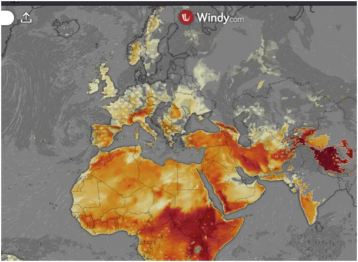
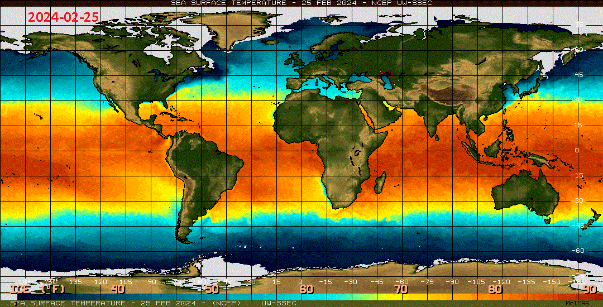
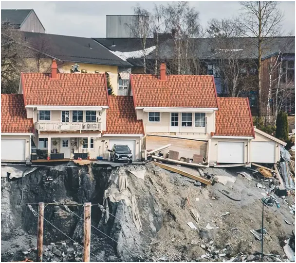

Nie bądźmy zbyt skrupulatni w czyszczeniu rowów melioracyjnych.
Koniec lutego to czas, gdy wyziębienie mórz na naszej, północnej półkuli osiąga maksimum, Słońce w swej wędrówce nagrzewając lądy wytwarza wznoszące się ciepłe prądy powietrzne nawet w Skandynawii, ale gdy jego promienie trafiają w morza i oceany są pochłaniane, by nagrzewać te głębiny. Gdy nocą ciepłe morza i jeziora będą nagrzewać powietrze będzie to znak, że mamy już lato. Termika powietrza, czyli prądy wznoszące, na mapce.

Tymczasem spójrzmy jak koniec lutego wypada z perspektywy sezonu poprzedniego. Animacja wyraźnie pokazuje znacznie zimniejszy ocean na zachód od Sahary, czyli susza u nas jest spodziewana. Analogicznie na południu Afryki, pas zimnego Atlantyku znacznie szerszy.

Pacyfik na równiku chłodniejszy, ale Południowy Pacyfik, czyli wybrzeża Antarktydy bije rekordy. Tam sezonowy szelf lodowy o ponad 1000 km bliżej równika, to tyle, co z Warszawy do Sofii, a mówimy o okresie letnim na tamtej półkuli. Takie to mamy globalne ocieplenie! Najcieplejsze wybrzeże Antarktydy, poniżej południa Afryki z pasem lodu dwa razy szerszym niż rok wcześniej. Aj -waj!
Cały Półwysep Kalifornijski otoczony zimnymi wodami. Zatoka Amerykańska, kiedyś Meksykańska też chłodniejsza niż przez rokiem po kilku atakach ostrej zimy na tym subtropikalnym wybrzeżu.
W naszym regionie ciepłe prądy jeszcze daleko mają do Hiszpanii, chłodniejsze jest Morze Północne, Bałtyk i Morze Czarne i Śródziemne. Na Bliskim Wschodzie Zatoka Perska też w tonacji blue. Zatem cytując klasyka "planeta płonie". Brak chmur wiosną pomoże nadrobić zaległości w nagrzewaniu akwenów, ale to oznacza suszę w regionie.
Niże gnane z Zachodniego Atlantyku omijają nasze okolice i dają obfite opady w Skandynawii, gdzie zimą zasypują cały obszar śniegiem, a latem ulewy erodują skały i powodują osunięcia terenu.

Żadna prasa nie zająknie się o zmianie trajektorii prądów oceanicznych, ale fraza "globalne ocieplenie" musi być na każdej stronie przynajmniej raz, zatem będzie. Obecne deszcze w Polsce traktujmy jak błogosławieństwo i nie bądźmy zbyt skrupulatni w czyszczeniu rowów melioracyjnych, co nie spłynie szybko do morza, to nasze.
Paweł Klimczewski